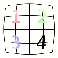
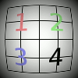

This filter lets you simulate but also correct the typical distortion effect introduced in photo images by the glasses contained in the camera lenses.

The allowed range of all options is from -100.0 to 100.0.
- Presets, “Input Type”, Clipping, Blending Options, Preview, Merge filter, Split view
-
![[Note]](images/note.png)
Note These options are described in Section 2, “Common Features”.
- Main
-
The amount of spherical correction to introduce. Positive values make the image convex while negative ones make it concave. The whole effect is similar to wrapping the image inside or outside a sphere.
- Edge
-
Specifies the amount of additional spherical correction at image edges.
- Zoom
-
Specifies the amount of the image enlargement or reduction caused by the hypothetical lens.
- Shift X, Shift Y
-
These two options specify the shift of the image produced by not perfectly centered pairs of lenses.
As above this option produces visible results only if the Main or Edge options are non zero.
- Brighten
-
The amount of the “vignetting” effect: the brightness decrease/increase due to the lens curvature that produces a different light absorption.
The Main or Edge options must be non zero for this option to produce noticeable results.
Figure 17.69. Example result of the Brighten option (Main set to 75.0)

-25.0
0.0

+25.0
- Background color
-
The part of the active layer outside the lens will have the background color selected here.
You can select the color:
-
Click on the color button to open the color selector dialog.
-
Click on the eye-drop button on the right to pick a color from the image.
-